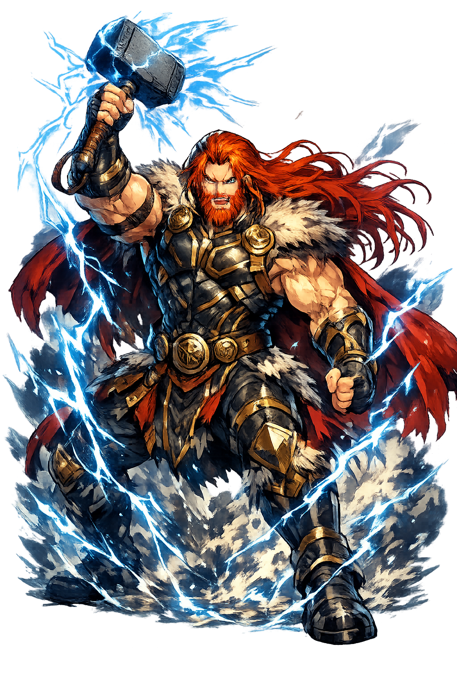

The Authentic Orthography
Thunder · Lightning · Strength · The Giant-Slayer

Why þórr.com is the correct form
Þórr
The name in its original Old Norse form. The þ (thorn) — the sound of a storm breaking, a tree splitting, a giant's skull cracking. Voiceless, sharp, unforgiving. The ó is long and dark, held like the roll of thunder across a fjord. The double rr is a geminate trill, the rattle of hail on stone. Proto-Germanic *Þunraz — "the thunderer." His name is not spoken. It is roared.
THOR
Reduced to four letters. A Marvel hero. A day of the week. A gym bro's tattoo. The thorn is gone — replaced by the soft th of English, which has none of the thorn's violence. The acute is gone. The geminate is gone. The thunder is gone. What remains is a brand, a cliché, a void where a storm once stood. The thunderer has become a logo.
Þórr
The thorn (Þ) restores the voiceless dental fricative — the sound of breaking, splitting, shattering. The acute on ó restores the length and stress of the original vowel. The geminate rr restores the trill, the rattle, the echo. This is not decoration. It is the recovery of thunder. The domain encodes to Punycode, but the browser displays the truth.
þórr.com → xn--rr-4ja7b.com
The non-ASCII characters þ (U+00FE), ó (U+00F3), and r are encoded while the ASCII remains visible. To the DNS, it is Punycode. To the north, it is Þórr.
How thunder was truly spoken
Domains, symbols, and the protection of Midgard
Þórr is not a thinker. He is a force. Son of Óðinn and Jörð — the Earth herself — he is the bridge between sky and land, between god and giant, between order and chaos. While his father wanders in search of wisdom, Þórr stands at the border of Midgard with his hammer Mjölnir, waiting for the next giant to try the fence. He does not negotiate. He does not compromise. He swings. And when he swings, mountains split. When he swings, the sky cracks. When he swings, the giant falls. He is the protector of mankind not because he loves them — though he does — but because he hates the giants more. And that hatred is enough.
The voice of the sky, the sound of divine anger. When Þórr swings Mjölnir, the sky cracks. The thunder is not a side effect. It is the announcement. The world hears and knows: the thunderer is abroad.
The guardian of Midgard, the human world. He stands at the border, hammer in hand, watching for giants, serpents, and the forces that would unmake the order of things. He does not sleep. He does not tire. He waits.
The greatest physical power among the gods. His belt Megingjörð doubles his strength. His iron gloves Járngreipr let him wield Mjölnir without being destroyed by its force. He is strength made conscious, power with a purpose.
Rain, wind, hail, and the fury of the northern sky. His chariot is drawn by two goats — Tanngrisnir and Tanngnjóstr — whose hooves spark lightning as they race across the clouds. He is the storm that clears the air. He is the storm that is the air.
Stories of giants, serpents, and the hammer's return
The giant Hymir took Þórr fishing. Þórr used the head of an ox as bait. He cast his line into the deep. The Midgard Serpent Jörmungandr — so vast it encircles the entire world — bit. The sea boiled. The earth shook. Þórr pulled with all his strength, his feet breaking through the bottom of the boat, bracing against the ocean floor. The serpent's head rose from the water, venom dripping, eyes burning. Þórr raised Mjölnir to strike the killing blow. Hymir, terrified, cut the line. The serpent sank back into the depths. Þórr threw the giant overboard in fury. And the serpent waits, coiled around the world, for Ragnarök — when Þórr will finally have his blow, and both will die.
The giant Þrym stole Mjölnir and demanded Freyja as his bride. Freyja refused — violently, with tears that turned to gold and rage that shook Asgard. So Þórr disguised himself as Freyja. He wore her necklace Brísingamen. He wore her dress. He wore a veil. Loki accompanied him as the bridesmaid. At the wedding feast, Þrym was amazed by "Freyja's" appetite — she ate an ox, eight salmon, and all the sweets meant for the women. Loki explained that she had fasted for eight days in anticipation. When Þrym placed Mjölnir in "Freyja's" lap as a wedding gift, Þórr tore off the veil, seized the hammer, and killed every giant in the hall. He did not spare the women. He did not spare the servants. He killed them all. And he walked back to Asgard in a wedding dress, covered in giant blood, swinging Mjölnir like a lantern.
The giant Hrungnir boasted that he would kill all the gods, carry Freyja and Sif to Jötunheimr, and level Asgard. Þórr accepted his challenge. Hrungnir's heart was made of stone, his head of flint, his shield a whetstone. He stood on his shield, waiting. Þórr threw Mjölnir. Hrungnir threw his whetstone. The weapons met in mid-air. The whetstone shattered. Mjölnir struck Hrungnir's head, crushing his skull. A fragment of the whetstone lodged in Þórr's forehead. He fell — the stone was stuck too deep to remove. The sorceress Gróa tried to sing it out, but Þórr, impatient, told her he had just seen her husband return from the dead. She was so overjoyed she forgot the rest of the spell. The stone remains in Þórr's forehead to this day. A reminder: even the thunderer bleeds. Even the thunderer is wounded.
Þórr and Loki traveled to the hall of Útgarða-Loki, king of the giants. The king challenged Þórr to three contests. First: drink from a horn. Þórr drank three mighty drafts — but the horn was connected to the sea, and he lowered the ocean level. Second: lift a cat. Þórr strained until his veins bulged — but the cat was the World Serpent in disguise, and he lifted its paw high enough to touch the sky. Third: wrestle an old woman. Þórr fought with all his strength — but the old woman was Old Age itself, and she bent him to one knee. He failed all three contests. Yet when Útgarða-Loki revealed the truth, he admitted that Þórr had nearly destroyed the world with his drinking, nearly lifted the serpent from the ocean, and nearly defeated time itself. Þórr raised Mjölnir to kill the giant for the humiliation. But Útgarða-Loki vanished, and the hall was revealed as an illusion. Þórr walked home in silence. And he never spoke of it again.
Óðinn has wisdom. Freyja has beauty. Baldr has light. But Þórr has the blow. He is the proof that not everything needs to be understood to be real. Not everything needs to be spoken to be true. Not everything needs to be gentle to be good. He protects because he strikes. He loves because he hates the enemy. He is the god who does not negotiate with chaos — he destroys it. His hammer is the answer to every question the giants ask. And when Ragnarök comes, he will walk into the poison cloud to kill the serpent, knowing he will die, knowing it changes nothing, walking anyway.
This is not a directory. This is a resurrection.
Enter the Lexicon